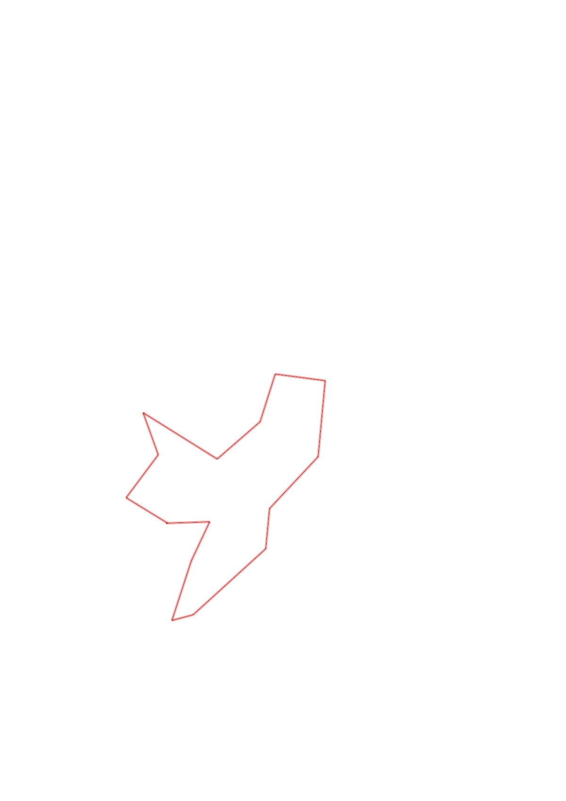
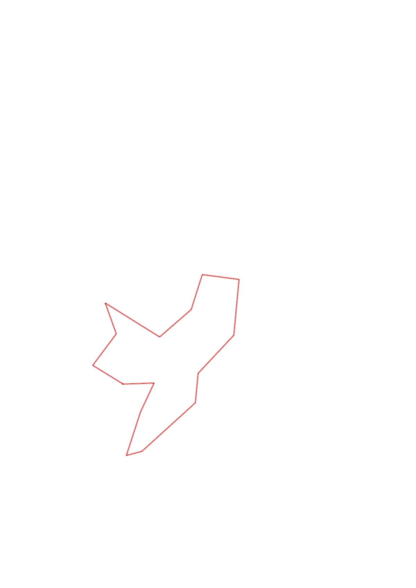

| Control |
Points |
Time Punched |
Distance |
Your Time |
Pace |
Place |
Fastest Time |
Median Time |
% Behind Fastest |
| 63 |
60 |
|
0.24 |
0:02:05 |
08:40 |
7 / 13 |
0:01:34 |
0:02:05 |
32% |
| 37 |
30 |
|
0.24 |
0:02:29 |
10:20 |
2 / 4 |
0:02:22 |
0:03:29 |
4% |
| 31 |
30 |
|
0.35 |
0:07:29 |
21:22 |
3 / 5 |
0:04:32 |
0:07:29 |
65% |
| 42 |
40 |
|
0.12 |
0:02:58 |
24:43 |
8 / 9 |
0:00:52 |
0:01:49 |
242% |
| 54 |
50 |
|
0.55 |
0:06:05 |
11:03 |
1 / 2 |
0:06:05 |
0:08:20 |
0% |
| 80 |
80 |
|
0.22 |
0:02:56 |
13:20 |
3 / 11 |
0:02:23 |
0:03:30 |
23% |
| 48 |
40 |
|
0.4 |
0:03:56 |
09:50 |
7 / 10 |
0:02:29 |
0:03:23 |
58% |
| 59 |
50 |
|
0.43 |
0:04:58 |
11:33 |
3 / 3 |
0:03:55 |
0:04:25 |
26% |
| 36 |
30 |
|
0.28 |
0:03:41 |
13:09 |
6 / 6 |
0:02:35 |
0:03:26 |
42% |
| 91 |
90 |
|
0.28 |
0:04:09 |
14:49 |
3 / 5 |
0:03:56 |
0:04:09 |
5% |
| 41 |
40 |
|
0.32 |
0:05:21 |
16:43 |
6 / 7 |
0:02:38 |
0:04:19 |
103% |
| 58 |
50 |
|
0.49 |
0:05:58 |
12:10 |
4 / 4 |
0:04:25 |
0:05:15 |
35% |
| 51 |
50 |
|
0.25 |
0:02:53 |
11:32 |
5 / 9 |
0:01:43 |
0:02:53 |
67% |
| 35 |
30 |
|
0.3 |
0:03:23 |
11:16 |
7 / 8 |
0:02:08 |
0:02:40 |
58% |
| Finish |
0 |
|
0.27 |
0:02:18 |
08:31 |
9 / 10 |
0:01:23 |
0:01:33 |
66% |
Total Distance Covered: 4.74km
Points Scored: 670
Late Penalty: -20
Final Score: 650
Total Time: 1hours 0minutes 39seconds
Efficiency: 137.13 points/km
 
